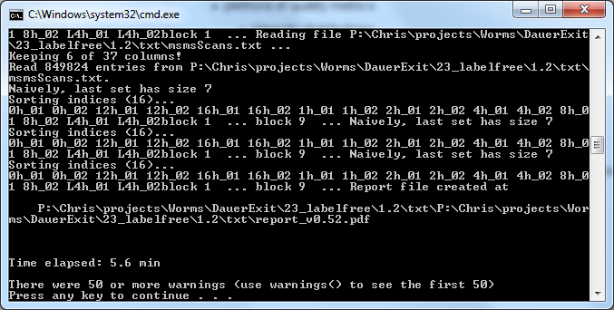

Drag’n’drop Usage Guide for PTXQC
Chris Bielow chris.bielow@fu-berlin.de
2026-02-17
Source:vignettes/PTXQC-DragNDrop.Rmd
PTXQC-DragNDrop.RmdDrag’n’drop Usage Guide for PTXQC
Requirements:
- any Windows System
- R and PTXQC should be installed using the installation instructions at https://github.com/cbielow/PTXQC/tree/master/inst/dragNdrop.
Generating a quick QC report without asking questions!
- open a Windows Explorer and find your MaxQuant txt-output folder
- open another Windows Explorer window and navigate to the (network)
folder where the QC software was copied to during installation,
e.g.
P:\Chris\Exchange\QC(where drive P could be some network share). - drag’n’drop the txt folder onto
createQC_dragNdrop.bat(you can also drag any file within the txt folder, e.g.evidence.txt)

- A console will pop up and show stuff. Wait… if all went well, one of
the last lines is
Time elapsed: ... minand a pdf report within your txt folder. It has a version and a folder name attached to it (e.g.report_v0.63_diabetes.pdf). The version number will increase every time there is an update in PTXQC (big change in version number means big change in functionality). The name is taken from the path where the txt is located in - it helps you to distinguish report files when they are open in a PDF viewer or copied somewhere else. The console window will stay up until you press a key.

Generating a QC report using a configuration file
There are two ways to customize parameters for a report:
- PTXQC will search for a YAML file within the txt-folder for which it
generates the report. If there is one (with the correct name,
i.e.
report_vXXX.yaml, where XXX is the PTXQC version number), this report file will be used. Thus, if you already have txt-folder containing a report pdf plus thereport_*.yamlinside, just edit the YAML file and re-run PTXQC. - If your txt-folder has not been analysed by PTXQC before or
you want to try another configuration, you can use the
createQC_dragNdrop_withYAML.bat. This .bat file expects a YAML configuration file right next to itself. This YAML file you need to provide. But no worries. One such YAML file with default parameters is generated each time you invoke a QC report generation. Just take any YAML file from a previous run in any other txt-folder. Copy the YAML file next to the .bat file, and name itconfig.yaml. Modify it to your needs using a text editor such as Notepad. From now on, you can use thecreateQC_dragNdrop_withYAML.batfor any report which should use this configuration. The usage is identical to the one you already know - just targetcreateQC_dragNdrop_withYAML.batinstead ofcreateQC_dragNdrop.batwhen dragging a txt-folder.
Note: The second option will take precedence over the first.